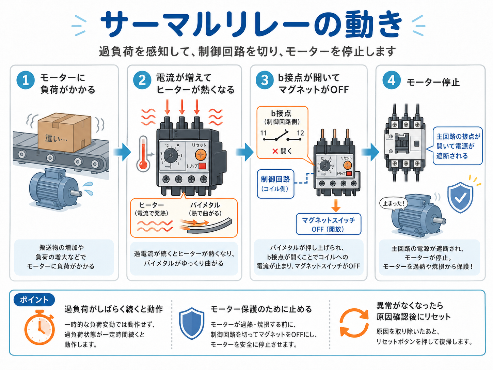
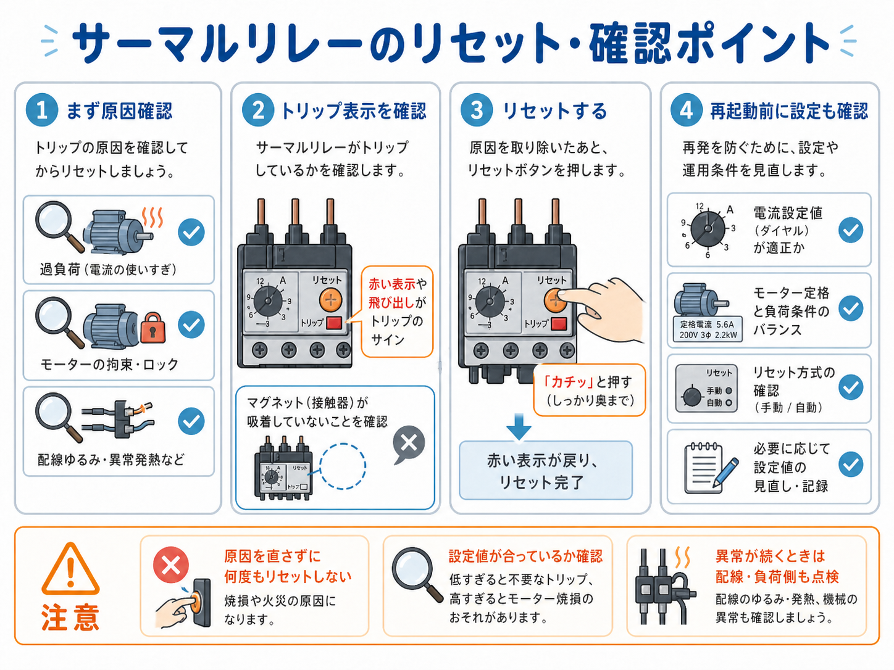

先に結論：サーマルリレーは「モーターを過負荷から守る役」
サーマルリレーは、モーターに流れる電流が大きい状態が続いたときに動作し、 マグネットスイッチをOFFにしてモーターを止めるための保護部品です。
名前だけ見ると少し難しく感じますが、考え方はシンプルです。 モーターに無理な負荷がかかって電流が増え、その状態がしばらく続くと、 サーマルリレーが「危ない」と判断して制御側を切ります。

先輩 サーマルリレーは、モーターが重い負荷で無理をしているときに、止めるきっかけを作る保護部品だよ。

新人 つまり、サーマルリレーが直接モーターを動かすというより、異常時に止める側なんですね。

先輩 そう。特に大事なのは、トリップしたら原因確認してからリセットすることだね。
サーマルリレーとは？
サーマルリレーは、モーター保護でよく使われる部品です。 制御盤の中では、マグネットスイッチの下や隣に取り付いていることが多く、 モーターに流れる電流を見ています。
モーターに負荷がかかりすぎると電流が増えます。 その状態が続くと、サーマルリレー内部のヒーターやバイメタルが反応し、 接点が切り替わってマグネットスイッチをOFFにする流れになります。

主回路を直接切る部品として見るより、制御側を止める部品として見る
サーマルリレーは、主回路の大きな電気を直接バチッと切るというより、 制御回路側の接点を開いてマグネットスイッチをOFFにする、という見方をすると追いやすいです。
サーマルリレーの基本の動き
サーマルリレーの動きは、ざっくり言うと 負荷が増える → 電流が増える → 熱で動く → 接点が開く → マグネットがOFF という流れです。

1. モーターに負荷がかかる
搬送物が重い、機械が固い、回転部が引っかかるなどで、モーターに負荷がかかります。
2. 電流が増えて熱くなる
負荷が大きい状態が続くと電流が増え、サーマル内部のヒーターやバイメタルが反応します。
3. b接点が開く
サーマルリレーの接点が切り替わり、マグネットスイッチのコイル側が止まります。
4. モーターが止まる
マグネットがOFFになり、主回路の接点が開いてモーターへの電源が止まります。
一瞬の負荷ではすぐ動かないことが多い
サーマルリレーは、瞬間的な負荷変動ですぐに動作するというより、 過負荷状態がある程度続いたときに動作するイメージです。
マグネットスイッチとの関係
サーマルリレーを理解するときは、マグネットスイッチとセットで見ると分かりやすいです。 マグネットスイッチはモーターへ行く主回路を入切する役、サーマルリレーは異常時にそのマグネットを止める役です。
| 部品 | 主な役割 | 現場での見方 |
|---|---|---|
| マグネットスイッチ | モーターなどへ行く主回路を入切する | PLCや押しボタンの指示で、実際に大きめの電気を通す役 |
| サーマルリレー | モーターの過負荷を検知して、マグネットをOFFにする | 異常時に止めるための保護部品として見る |
| PLC出力・押しボタン | マグネットのコイルをON/OFFする指示を出す | 制御側の指示役として見る |
新人 マグネットスイッチがモーターを動かして、サーマルリレーが異常時に止める、という分け方ですか？
先輩 その考え方でOK。サーマルがトリップすると、マグネットのコイル側が切れて、結果的にモーターが止まる流れだよ。
トリップ後のリセット・確認ポイント
サーマルリレーがトリップしたときに大事なのは、すぐにリセットボタンを押すことではありません。 まずはなぜトリップしたのかを確認することが大切です。

原因を確認する
過負荷、モーターの拘束、配線のゆるみ、異常発熱などがないか確認します。
トリップ表示を見る
赤い表示や飛び出し、リセットボタンの状態などを見て、トリップ状態か確認します。
原因を取り除いてからリセット
原因が残ったまま何度もリセットすると、モーターや配線を傷める可能性があります。
設定値も確認する
電流設定値が低すぎても高すぎても問題です。モーター定格と合っているか見直します。
原因を直さずに何度もリセットしない
サーマルが何度も落ちる場合は、どこかに無理がかかっている可能性があります。 リセットだけで復帰させ続けるのではなく、負荷側・配線側・機械側を確認する方が安全です。
現場で見るときの注意点
サーマルリレーは、ただ付いていれば安心という部品ではありません。 設定値、リセット方式、モーターの定格、負荷条件が合っているかを見る必要があります。
- 電流設定値がモーター定格に対して極端にズレていないか
- 手動リセットか自動リセットか
- トリップした原因が負荷側なのか、配線側なのか、モーター側なのか
- マグネットスイッチとサーマルリレーの組み合わせが適切か
- 何度も同じ停止が出ていないか
設定値は「落ちないように上げる」ものではない
サーマルがよく落ちるからといって、原因確認をせずに設定値だけ上げるのは危険です。 本当に負荷が重いのか、機械が固いのか、配線やモーターに異常がないかを先に確認します。
まとめ：サーマルリレーはモーターを守るための安全役
サーマルリレーは、モーターの過負荷を検知して、マグネットスイッチをOFFにするための保護部品です。 マグネットスイッチが「動かす役」なら、サーマルリレーは「無理が続いたときに止める役」と考えると分かりやすいです。
特に現場では、トリップしたあとにリセットだけで済ませないことが大事です。 原因を確認し、設定値や負荷条件を見直すことで、同じトラブルを繰り返しにくくなります。